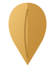

| Tag | Uhrzeit | Thema |
|---|---|---|
| Dienstag | 20:00 Uhr | Gaming & Chat |
| Donnerstag | 20:00 Uhr | Technik-Werkbank |
| Samstag | 16:00 Uhr | Entspannter Nachmittagsstream |
Drei Fellknäuel, die im Hintergrund mitstreamen.
Kurzer, verspielter Steckbrief: Lieblingsplatz, Marotte, Lieblings-Leckerli.
Kurzer, verspielter Steckbrief: Lieblingsplatz, Marotte, Lieblings-Leckerli.
Kurzer, verspielter Steckbrief: Lieblingsplatz, Marotte, Lieblings-Leckerli.
Modell/Komponenten eintragen.
Modell eintragen.
Modell eintragen.
OBS mit eigens gebauter Steuerzentrale (Balu-Streamstudio).

"Mandeln" sind der Spaß-Name für Bits, Subs und Spenden auf diesem Kanal — jede Unterstützung lässt im Chat und Overlay eine Mandel klimpern. Echte Mandeln bitte nicht an die Chinchillas verfüttern, die mögen davon lieber nur sehr selten ein kleines Stückchen. 😉